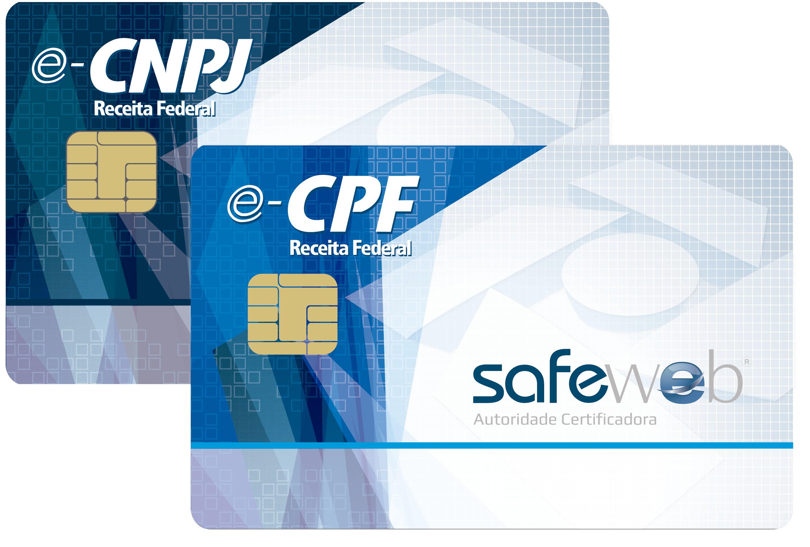

<section class="deep-blue" id="certification">
  <div class="container">
    <div class="row">
      <div class="col-sm-3 mb-3">
        <h3 class="text-center">Certificação Digital</h3>
        <p>
          O certificado digital é uma credencial que identifica uma entidade, seja ela empresa,
          pessoa física, máquina, aplicação ou site na web. Documento eletrônico seguro, permite
          ao usuário se comunicar e efetuar transações na internet de forma mais rápida, sigilosa e com validade jurídica.
        </p>
      </div>
      <div class="col-sm-3 mb-4">
        <h3 class="text-center">Benefícios do certificado digital</h3>
        <p>Pessoa Jurídica</p>
        <ul>
          <li>Emitir notas fiscais eletrônicas</li>
          <li>Entregar o IRPJ, a DCTF e a DIPJ</li>
          <li>Assinar contratos digitais</li>
          <li>Acompanhar processos legais</li>
          <li>Consultar e regularizar a situação cadastral e fiscal</li>
          <li>Emitir certidões</li>
          <li>Acompanhar processos fiscais</li>
          <li>Verificar a autenticidade de informações divulgadas no diário oficial</li>
        </ul>
        <p>Pessoa Física</p>
        <ul>
          <li>Assinar contratos digitais</li>
          <li>Acompanhar processos legais</li>
          <li>Declarar imposto de renda via internet</li>
          <li>Consultar e atualizar o cadastro de contribuinte pessoa física</li>
          <li>Recuperar informações sobre o histórico de declarações</li>
          <li>Obter certidões de receita federal</li>
          <li>Acompanhar processos tributários eletronicamente</li>
        </ul>
      </div>
      <div class="col-sm-6 text-center">
        
      </div>
    </div>
  </div>
</section>
